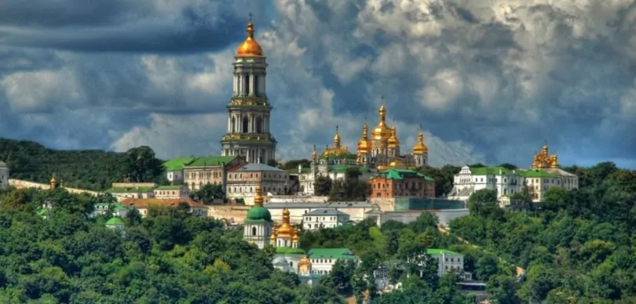
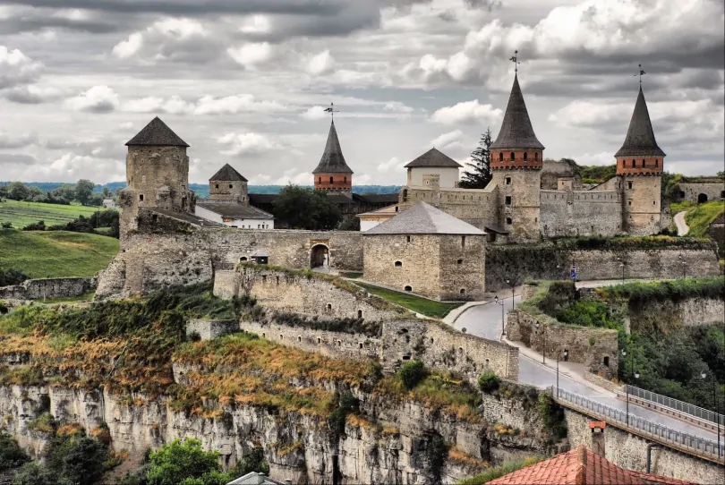
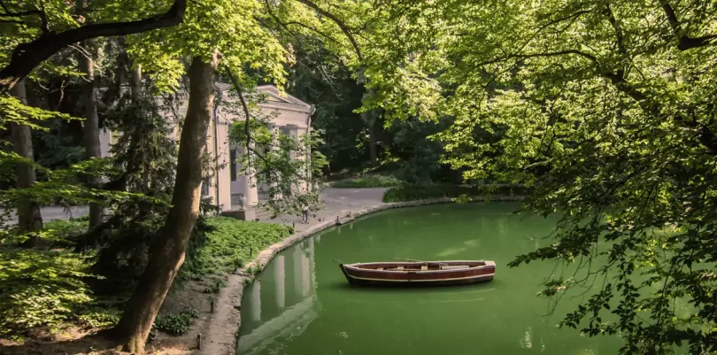
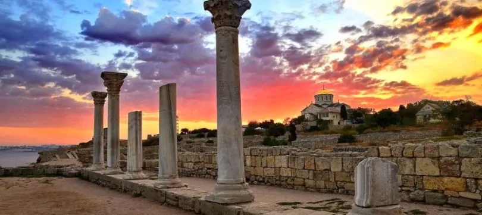
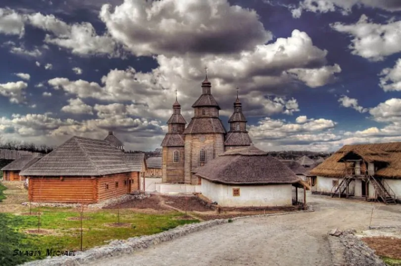
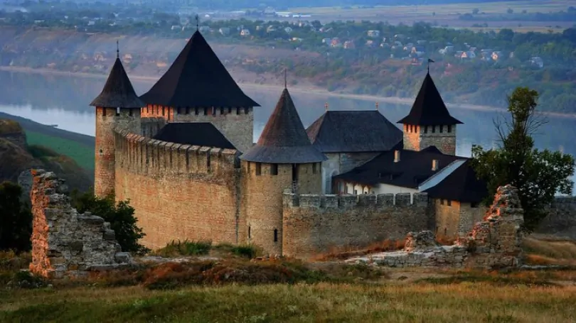

Від гірських вершин Карпат до безмежних степів Криму, від
кам'яних джунглів Києва до мальовничих містечок Західної
України —
кожен куток нашої країни як мистецький шедевр,
який чекає на своє відкриття.
КИЄВО-ПЕЧЕРСЬКА ЛАВРА
Це, мабуть, одна з найвідоміших та найпопулярніших пам'яток
Києва. Сюди йдуть як мешканці столиці, так і її гості.
Це
місце цікаве давньою історією, цікавими артефактами, красою
церков та чудотворними іконами, загадковими печерами та
дивовижними легендами.
Історія Києво-Печерської лаври починається
1051 року, за
часів князя Ярослава Мудрого. Саме слово “лавра” з
грецької
означає забудований квартал чи церковний
прихід. Звичайно ж, Києво-Печерська
лавра відома своїми
печерами.К
Ближні печери (або Антонієві
печери) знаменні
тим, що зберігають кілька старовинних поховань. Загальна
протяжність підземних печер — 383 м.
ЗАПОВІДНИК “КАМ'ЯНЕЦЬ”
Величну перлину України знають поза межами країни. Починаючи
від архітектури та закінчуючи артефактами, локація вражає
кожного.
Заповідник знаходиться у місті
Кам'янець-Подільський.
Легендарну неприступність цієї фортеці
зумовлювало саме її унікальне розташування.
Заповідна
частина — Старе місто — розташована на скелястому острові
заввишки 20-30 м, утвореному каньйоном Смотрича.
Своєрідність та унікальність її полягають у гармонійному
поєднанні ландшафту з містобудівною структурою
середньовічного міста,
в якому військові інженери
створили фортифікаційну систему, яка не має аналогів у
Європі.
СОФІЇВКА”
Неймовірно гарне місце, в якому можна відпочити і душею, і
тілом є Дендрологічний парк в Умані. Тут зібрані унікальні
зразки трав,
повітря завжди свіже, а всі рослини
організовані в барвисті та красиві композиції. Та й вся
історія парку відчувається вже з перших кроків ним.
СОФІЯ КИЇВСЬКА
Ще одним із символів української столиці став храм у центрі
Києва.
Софія Київська — це національний
історико-архітектурний заповідник.
Собор був головною християнською святинею
Східної Європи та історичним центром Київської
митрополії.
У
ньому збиралося віче, приймалися іноземні посли та обиралися
князі на київський престол.
Сьогодні Софійський собор
знаменитий своїми унікальними фресками площею понад 3000
квадратних метрів, а також мозаїками XI століття.
ХЕРСОНЕС ТАВРІЙСЬКИЙ
Музей-заповідник просто неба — справжня перлина українського
Криму. Херсонес Таврійський — це археологічний комплекс,
розташований на березі Чорного моря в місті Севастополь. Це
надзвичайно важливий артефакт, який нагадує про багатий
культурний та історичний спадок України.
Херсонес
Таврійський заснований греками близько 2,500 років тому.
Найвідоміший і найбільший пам'ятник
історії
Севастополя, розташований на території Херсонесу, — це
Туманний дзвін.
Його вага становить понад 5,5 тисячі кг,
і
відлитий він був у 1778 році. Матеріалом для його створення
послужили розплавлені турецькі гармати, здобуті в результаті
воєнних дій як трофей.
Наразі український Крим окуповано ворожими
російськими військами з 2014 року, тому дістатися туди зараз
неможливо.
Та ми сподіваємося, що зовсім скоро зможемо поїхати на наше
улюблене Чорне море,
щоб відпочити, купити кримську
пахлаву і відвідати величний Херсонес Таврійський.
ХОРТИЦЯ
Це найбільший річковий острів України та Європи, де
знаходилася Запорізька Січ.
Хортицю називають символом
незалежності та козацьким серцем Батьківщини.
До того ж
це
унікальне природне диво України.
ХОТИНСЬКА ФОРТЕЦЯ
Одна з найінстаграмніших локацій, єдина українська фортеця у
пониззі, головна окраса Буковини.
Це все про Хотинську
фортецю, яку заснували у 1325 році під час правління князя
Володимира Великого.
Спочатку це був укріплений
дерев'яно-земляний форт, який символізував центр князівської
влади.
7 ПРИРОДНИХ ЧУДЕС УКРАЇНИ
Країна з величезним туристичним потенціалом, неймовірно
красива Україна має також безліч
природних чудес.
Розгляньмо рейтинг семи природних чудес України, де кожен
куточок — це своєрідний маленький
пазл величезної
картини
природної гармонії нашої Батьківщини.
Асканія-Нова — це найстаріший біосферний заповідник,
розташований у межах Чаплинського
району Херсонської
області. Біологічна різноманітність степових екосистем
налічує понад 500 видів вищих рослин
та понад 3000 видів
тварин.
На жаль, зараз заповідник перебуває під окупацією російській
військ. Вони призначають своїх “керівників”
і вивозять
наших
тварин на територію рф-ії.
До того ж у серпні 2023 року на території заповідника було
багато пожеж, які ніхто не ліквідовував.
Наразі дуже
важко
сказати, що там відбувається зараз,
тож маємо величезну
надію на повернення Асканії-Нової під контроль українських
військ якнайскоріше.
Які є 7 чудес України?
Україна — неймовірно багата на гарні місця країна. Сім
найгарніших з них — це Києво-Печерська Лавра,
заповідник
“Кам’янець”, Софіївка, Софія Київська, Херсонес
Таврійський
і Хотинська фортеця.